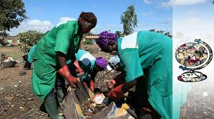
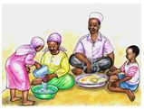
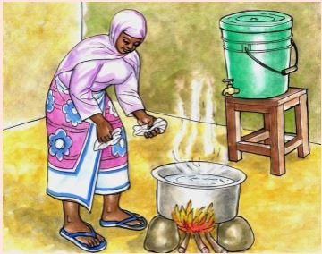
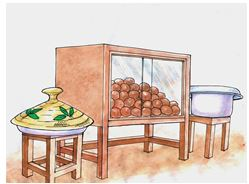
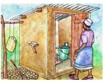

KUJILINDA NA MARADHI
YA KIPINDUPINDU:
YA KIPINDUPINDU:
Kuna uwezekano mkubwa mtu akajilinda asipate kipindupindu kama atafuata taratibu zifuatazo:
1.Kuweka Mazingira safi na salama.

2.Kosha mikono kwa maji yanayotiririka kabla au baada ya kula,baada ya kutoka chooni,kabla ya kumlisha mtoto na baada ya kumsafisha 
3.Hakikisha unachemsha maji ya kunywa au kuyatia dawa (waterguard) kabla ya kuyatumia.

4.Hakikisha unahifadhi vizuri chakula chako ili kisifikiwe na nzi

5.Kinyesi au maji ya choo yaliyotumika na mgonjwa wa kipindupindu yanapaswa kuhifadhiwa vizuri ktika mashimo
6.Tumia choo kila mara - usiende haja karibu au ndani ya chanzo cha maji.
